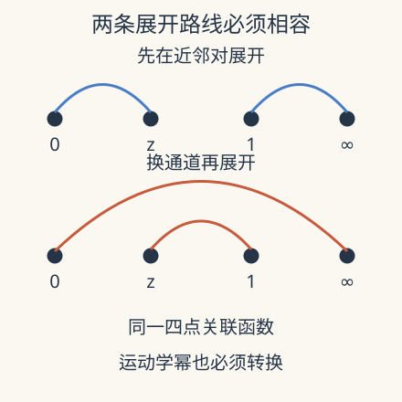

本页目录
现代场论方法 II · 共形 Bootstrap：同一个四点函数必须给出同一个答案
先修：对称性与关联函数、量子临界。本讲以一维交比上的完整可算函数进入 crossing，再说明真正的谱约束。严格数值界还需要共形表示论、反射正性与凸优化；网页实验没有实现求界算法。
不知道所有微观耦合，为什么仍能排除一批临界理论？
1. 四个位置留下一个一致性问题
上一讲的对称性把标量两点函数固定为幂律，却给四点函数留下交比依赖。先看同一直线上的四个相同标量初级算符 \(\phi\)，缩放维数为 \(\Delta>0\)。经共形变换把位置放到 \(0,z,1,\infty\)，取 \(0<z<1\)，定义
无穷远算符带有相应的缩放因子。\(G\) 是去掉已知位置幂后的无量纲函数，不能把它和完整关联函数混为一谈。交换中间配对方式，同一个关联函数要满足
这叫 crossing 一致性。它不是说 \(G(z)\) 自己关于 \(1/2\) 对称，而是包括前面的运动学幂。漏掉这个因子，会把正确的关联函数判成错误。
2. 先完整检查一个特例
广义自由场的四点函数按两点函数的三种配对分解。在上述归一化下，三项分别给
逐项乘以 \((1-z)^{2\Delta}\) 后得到 \((1-z)^{2\Delta}+[z(1-z)]^{2\Delta}+z^{2\Delta}\)，显然在 \(z\leftrightarrow1-z\) 下不变。因此该函数满足 crossing，且 \(z\to0\) 时首项 1 对应恒等算符通道。
“广义自由”允许指定缩放维数，并以高斯配对规则构造相关函数；它不自动对应带局域应力张量的任意维度自由拉格朗日场论。这个特例给可复核的正例，不是在推导真实三维 Ising 临界指数。

3. OPE 如何把函数变成谱数据
算符乘积展开把靠近的两个算符写成局域算符及其导数的和。对上述一维共形设定，经过后裔求和，可以写成
\(h>0\) 的 \(g_h\) 是一维全局共形块，恒等块另写为 1。\(\Delta_{\mathcal O}\) 给交换初级算符的维数，\(a_{\mathcal O}\) 在适当归一化、相同外部算符与幺正性条件下是 OPE 系数平方，因而非负。高维理论还要记录自旋，不能把这一条一维块直接替代高维块。
将展开代入 crossing，得到向量式约束
其中 \(F_h=(1-z)^{2\Delta}g_h(z)-z^{2\Delta}g_h(1-z)\)。这一步把“两个答案相等”转换成“某个函数能否由允许谱的非负组合抵消”。动力学信息仍在维数和系数里，方程没有凭空消除未知量。
4. 排除理论比猜出理论容易在哪里
假设某个谱隙范围成立。如果找到线性泛函 \(\alpha\)，使 \(\alpha(F_{\rm id})>0\)，并对所有该范围内允许的块满足 \(\alpha(F_h)\ge0\)，那么对 crossing 施加 \(\alpha\) 后左侧严格为正，与零矛盾。这就是一个排除证书。
实际泛函可由对称点的若干导数组成，计算还要控制自旋截断、块的近似和高维数尾部。有限导数阶找到的可行候选不等于精确解；数值不可行证书也需要误差裕量与正性条件。加入更多关联函数和对称性信息，可以收紧允许区域，但不是所有区域都自动缩成一个点。
这种逻辑解释了 bootstrap 的力量：它不是无条件用纯数学算出所有材料，而是在明确理论类别与假设下，用相容性排除不可能的谱。
5. 一个专门揭示截断陷阱的实验
对 GFF 函数，只截断其中的二项式级数：
\((a)_n=a(a+1)\cdots(a+n-1)\)。这是普通幂级数截断，不是按交换初级算符截断的共形块展开。我们测残差 \(R_N=(1-z)^{2\Delta}G_N(z)-z^{2\Delta}G_N(1-z)\)。先预测：在 \(z=1/2\) 残差为零，能证明近似在整个区间正确吗？
改变外部维数、截断阶与检查位置，比较精确 GFF crossing 和幂级数近似的区间残差。
默认静态核对：\(\Delta=1/2,N=6,z=1/4\)。此时二项式系数全为 1，精确 \(G=19/12\)，余项为 \(z^8/(1-z)\)；残差恰为 \((3/4)^8-(1/4)^8=0.10009765625\)。在 \(z=1/2\)，任意同一函数的反对称差都为零，这一点完全没有检验力。必须查看邻近点、导数或整个区间。
接近 \(z=1\) 时，一个通道的幂级数收敛慢，另一个通道更合适。实验限制在 \([0.1,0.9]\)，有限网格通过仍不能证明连续区间上的严格界。它训练的是残差诊断，不是一个简化版“自动发现临界指数”按钮。
截断误差还可以不用图像来估计。当 \(\Delta=1/2\) 时，被丢掉的正项尾和为 \(z^{N+2}/(1-z)\)；它随 \(N\) 下降，但在接近端点时下降很慢。若要把同一精度从中心扩展到更大的区间，就必须增加阶数或改用更合适的展开变量。真正的 bootstrap 同样需要为近似的共形块与尾部提供控制，但不能把这个几何级数界直接当成所有共形块的误差界。一个小残差必须同时注明函数、区间、范数和截断规则才有可比较的意义。
6. 研究窗口：解析约束怎样进入全息四点函数
2026-09-02 的 Zhou 讲义在四维 \(\mathcal N=4\) 理论、对应经典 IIB 超引力的范围，展示对称性与一致性如何组织全息关联函数。Mellin 表示把一些解析结构写得类似散射振幅，超对称 Ward 恒等式则增加额外约束。所查版本是讲义预印本；其中推广到高点、圈修正和弦修正的讨论深度并不相同。
本课的 GFF 正例不具有该计算的全部内容。进一步阅读时应追问：哪些数据来自对称性，哪些来自大 \(N\) 或强耦合输入，哪些接触项仍需独立条件固定？这也引向下一讲：极点与因子化很强，却未必决定所有无极点的局域项。
7. 两道迁移题
题 1。 构造一个 \(R(1/2)=0\) 但不恒为零的函数，说明单点测试的问题。
核对题 1
例如 \(R(z)=z-1/2\)。本实验残差还天然反对称，所以其中心点必为零。应检查离开中心的值或足够的独立导数，且区分数值检查与全区间证明。
题 2。 若允许某些 \(a_{\mathcal O}<0\)，第四节的正泛函排除论证还成立吗？
核对题 2
一般不成立。非负块经过负系数可产生负贡献，严格正的恒等项可能被抵消。必须重新说明非幺正理论的约束，不能照搬依赖反射正性的谱界。
速查与原始阅读
Crossing 要保留运动学幂；bootstrap 结合它与正谱系数。GFF 是已知解，幂级数残差实验只检验近似一致性，不求临界指数或严格允许区间。
- Simmons-Duffin：TASI 共形 bootstrap 讲义，2016-02-25 首发；共形块、反射正性与数值排除逻辑。
- Zhou：Pre-Strings 全息关联与解析 bootstrap，2026-09-02 理论讲义预印本；经典超引力对偶区间及推广条件见正文。
- Elvang、Huang：散射振幅讲义，2013 年首发；为下一讲的解析结构与因子化提供入口。
来源核查：2026-09-08。下一讲：散射振幅。
继续共形块、正性与排除证书，从后裔范数算真正的共形块，并用解析不等式覆盖一维允许谱的整个半轴。